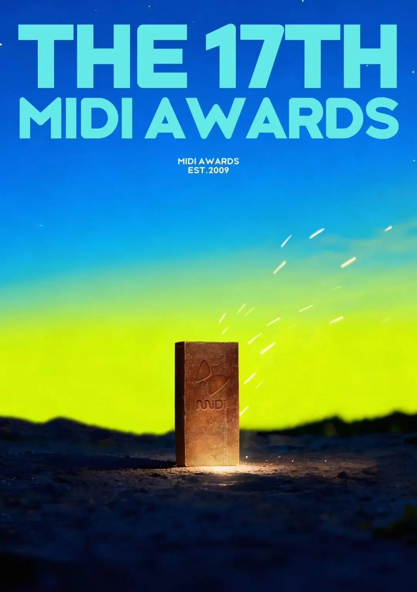
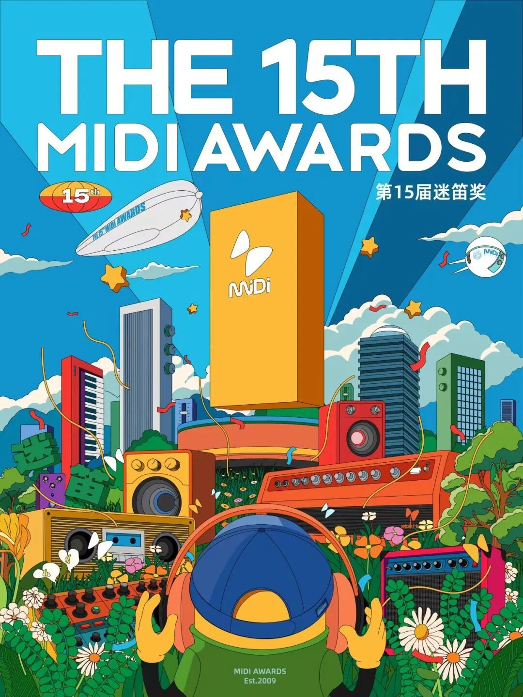
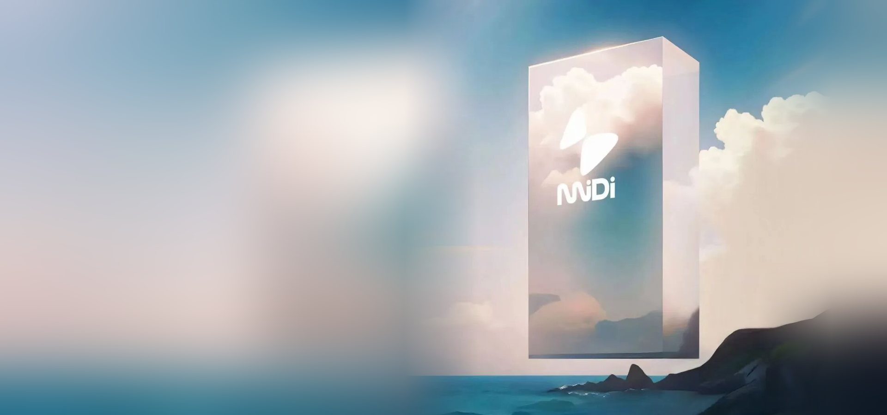

参选作品征集
该阶段不做任何专业判断，仅整理和审核音乐人或作品是否符合参评条件。
本地对比样例，不是现网，也未部署。文案与主视觉来自迷笛奖官网公开内容。

ABOUT
迷笛奖由迷笛主办，始于 2009 年。它评选当年度公开发行的专辑、单曲、乐队、歌手以及设计、影像等独立音乐成果。奖杯铸成中国青砖的样子，所以也称「板砖奖」。它不追逐流量，只为排练室和 Livehouse 里的原创力量留下一份记录。

CATEGORIES
以下中文名来自官网公开配置，英文名来自现网前端的官方对照表（app.js），不是另外翻译的。
年度最佳专辑
Album of the Year
年度最佳单曲
Song of the Year
年度最佳乐队
Band of the Year
年度最佳新人
Best New Artist
年度最佳女歌手
Best Female Vocalist
年度最佳男歌手
Best Male Vocalist
年度最佳摇滚音乐
Best Rock Recording
年度最佳重型音乐
Best Metal Recording
年度最佳民谣音乐
Best Folk Recording
年度最佳电子音乐
Best Electronic Recording
年度最佳器乐音乐
Best Instrumental Recording
年度最佳专辑设计
Best Recording Package
年度最佳演出海报设计
Best Concert Poster Design
年度最佳独立音乐视频
Best Independent Music Video
年度最佳 Livehouse
Best Live Music Venue
年度最佳音乐活动厂牌
Best Live Music Promoter
年度最佳独立音乐推广
Best Independent Music Promotion
中国摇滚贡献奖
Contribution to Chinese Rock Award
常委会特别奖
Committee Special Award
NOW
当前阶段与截止日期以组委会公布为准。下列阶段说明来自官网公开配置，本页不填写尚未公布的截止日，也不自行宣布当前阶段。
该阶段不做任何专业判断，仅整理和审核音乐人或作品是否符合参评条件。
大众评审投票，每人每个奖项 3 票，不可重复投票，可弃票；各奖项 TOP20 整理成预审轮作品列表，供专业评审参考。
与大众评审同期开始，专业评审每人每个奖项 3 票，可弃票；截止前可参考预审轮列表。大众与专业权重 1:1，汇总后在常委会监督下公开唱票，各奖项 TOP6（含并列）为提名。
以入围名单为基础，专业、大众评审共同投票，每人每个奖项 1 票，可弃票；权重 1:0.5，公开唱票，TOP1 获奖。
终审结束后、名单正式公布前。此阶段评委不能再投票，公众看不到结果。
确认结果、归档并公布。
阶段说明出处：迷笛奖公众号「第17届迷笛奖主视觉&提名名单公布」（官网配置中的来源链接）。
GALLERY
历届主视觉，均使用官网公开素材。

另有第14届徽章图 kv14.jpg，见素材目录。
在官方站点登录并完成评审身份校验。本对比样例不收集账号或验证码。